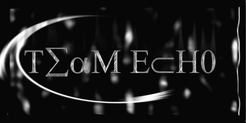

Good day all.
First I would like to speak about the article on Spinux.net. If someone in Team Echo re-hacked a site then I do not condone it and agree it is lame but considering it was ONE SITE when everyone is re-hacking the shit out of everything. I do not see the need to go off on a huge fuckin crybaby rant about it Centauri. Jesus Dude.
Second I would like to address our exploits. Some people are sending in a few mails ..very few..but still, asking what we are using and why we are using them. Alot of people are saying we use Msadc, Frontpage, etc. As to my knowledge we have never used the first and the second we have used. BUT not all of our NT sites are frontpage by far. And none of our solaris defacements have been frontpage. When at all possible on boxes that ARE frontpage we patch them on the way out. To us our defacing a NT frontpage box and defacing a solaris box are the same. We do not deface sites on every box we get access to. And to be quite honest we truly do not deface EVEN CLOSE to the sites we could. If the box has nothing on it and hosts sites then we deface them. If we get root, or install a backdoor on a decent NT server....then you most likely wont' see those sites. If we deface alal.net with Frontpage and you deface it with your 0-day what's the fuckin difference.......the site was still defaced either way. We do agree that defacing is lame and this isn't our lives. We do this as a hobby. We actually did try emailing the admins and as most of you know that shit doesn't work.
Thirdly. Are we script-kiddies? Maybe we are. We have run scripts before. And we definately use the cgi-bin on servers to execute backdoors remotely. That is for you little whiny bitches who actually give a fuck to decide. You whinny bitches who sit in IRC all day crying about Team Echo or any other group are really the fuckin lame ones. SO give it up.....we do this for US becuase we are having fun. We usually don't send fuck you's out to everyone and don't say much to the kidz who deface a site with only " we owned you". If we deface that same site with a political phrase....will it really be any different?
Lastly. We too are sick of seeing all the re-hacks. These rehackers are giving ALL .br hackers a bad name. And the point of the sites security has already been shown....no need to show it 300 times. Please stop the re-hacking. Greets to all the groups out there that feel as we do above.
shoutz: zenomorph, himi, DHC, artech, Analognet, Sysedit, Sh00tr, Bansh33, busdr1v3r, Blazinweed, nemesystm, nocx, and to PsychoSurfer aka l0ki or whatever the fuck that is......Man you get us hard!! We love you cuz you are the biggest fuckin whiner on IRC. If there weren't babies like you......oh nevermind anyways dude we love you too.
-Team Echo